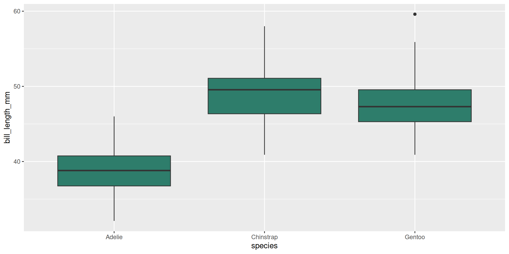

![]()
x <- c(2, 4, 6, 8, 10)
mean(x)[1] 6Reproducible Workflows · Session 1
No slides, no spoilers: just you. In pairs, spend 4 minutes writing down everything you associate with the word reproducible. Don’t filter, don’t judge:
We’ll collect your answers on the board, group them, and the session builds from there.
Pair-share (≈10 min total). 4 min in pairs, then we gather. There are no wrong answers: the point is to surface your prior experience, whatever your level.
## Class brainstorm {.paper}
::: {.paper-card}
**No slides, no spoilers: just you.** In pairs, spend **4 minutes** writing down everything you associate with the word *reproducible*. Don't filter, don't judge:
- What does a *reproducible analysis* look like?
- When is an analysis *not* reproducible?
- Have you ever tried to **re-run** someone else's (or your own!) code months later? What happened?
We'll collect your answers on the board, group them, and the session builds from there.
:::
<div class="paper-adv">
<button type="button" class="paper-adv-btn">Going further</button>
<div class="paper-adv-backdrop" hidden></div>
<div class="paper-adv-modal" hidden>
<div class="paper-adv-head"><strong>Going further</strong><button type="button" class="paper-adv-close" aria-label="Close">×</button></div>
<div class="adv-body">
<p><strong>Pair-share (≈10 min total).</strong> 4 min in pairs, then we gather. There are no wrong answers: the point is to surface your prior experience, whatever your level.</p>
</div>
</div>
</div>
Research, distilled, is a short chain of steps:
That is, in essence, what data science does every day: it turns step 2’s data into step 4’s results by doing step 3 (analysis) with code, statistics and visualization.
That structure is often called IMRAD: introduction, methods, results and discussion. Reproducibility means shipping the implementation details of every one of these steps, so a reader can rebuild them from scratch.
## What research is: the IMRAD structure {.inv}
Research, distilled, is a short chain of steps:
::: {}
1. A **question** worth asking.
2. An **experiment** (or study) that collects **data** to answer it.
3. **Analysis** methods, explained *and* applied to that data.
4. **Results** presented and commented.
5. A **discussion** that puts the results and the original question into perspective.
:::
**That is, in essence, what data science does every day**: it turns step 2's data into step 4's results by doing step 3 (analysis) with code, statistics and visualization.
::: {.callout-desc .fragment}
That structure is often called **IMRAD**: introduction, methods, results and discussion. Reproducibility means shipping the *implementation details* of every one of these steps, so a reader can rebuild them from scratch.
:::
This is the same IMRAD loop, run with code, the classic R for Data Science1 figure.
Hypothesis→ Experiment→ Data→ Conclusions every analysis starts from a question and ends by answering it.
1Import → 2Tidy → 3Transform → 4Visualize → 5Model → 6Communicate
That is IMRAD, by code. Import + Tidy reproduce your methods; Transform + Model + Visualize are the analysis; Communicate is the results. Every step runs on programming, the layer that makes the whole loop re-runnable — which is reproducibility.
## Research, by code: the data science cycle {.inv}
This is the same IMRAD loop, run with code, the classic *R for Data Science*^[Wickham, H., & Grolemund, G. (2017). R for data science (Vol. 2). Sebastopol: O'Reilly.] figure.
<div class="ds-ring">
<span class="ds-node"><span class="lbl">Hypothesis</span></span><span class="ds-arrow">→</span>
<span class="ds-node"><span class="lbl">Experiment</span></span><span class="ds-arrow">→</span>
<span class="ds-node"><span class="lbl">Data</span></span><span class="ds-arrow">→</span>
<span class="ds-node"><span class="lbl">Conclusions</span></span>
<span class="ds-note">every analysis starts from a question and ends by answering it.</span>
</div>
<div class="ds-row">
<span class="ds-node green fragment"><span class="n">1</span><span class="lbl">Import</span></span>
<span class="ds-arrow fragment">→</span>
<span class="ds-node green fragment"><span class="n">2</span><span class="lbl">Tidy</span></span>
<span class="ds-arrow fragment">→</span>
<span class="ds-node amber fragment"><span class="n">3</span><span class="lbl">Transform</span></span>
<span class="ds-arrow fragment">→</span>
<span class="ds-node amber fragment"><span class="n">4</span><span class="lbl">Visualize</span></span>
<span class="ds-arrow fragment">→</span>
<span class="ds-node amber fragment"><span class="n">5</span><span class="lbl">Model</span></span>
<span class="ds-arrow fragment">→</span>
<span class="ds-node indigo fragment"><span class="n">6</span><span class="lbl">Communicate</span></span>
</div>
<div style="margin-top: 30px;"></div>
<div class="callout-desc fragment">
**That is IMRAD, by code.** Import + Tidy reproduce your *methods*; Transform + Model + Visualize are the *analysis*; Communicate is the *results*. Every step runs on **programming**, the layer that makes the whole loop re-runnable — which is reproducibility.
</div>
John Ioannidis’s 2005 paper, Why Most Published Research Findings Are False, used a mathematical model to show that most claimed findings are false positives: the spark of the modern reproducibility crisis.
Core concepts of the crisis
Key causes
## The reproducibility crisis {.inv}
John Ioannidis's [2005
paper](https://pmc.ncbi.nlm.nih.gov/articles/PMC1182327/pdf/pmed.0020124.pdf), *Why Most Published Research Findings Are False*, used a mathematical model to show that most claimed findings are false positives: the spark of the modern reproducibility crisis.
::: {.callout-tip title="Core concepts of the crisis"}
- The 2005 paper: small samples, tiny effects, high bias, flexible designs make claimed findings statistically likely to be wrong.
- Impact across fields: from medicine and biomedicine into psychology, the social sciences and the life sciences.
:::
::: {.callout-warning title="Key causes"}
- "Publish or perish" culture: novelty rewarded over truth.
- P-hacking: adjusting analysis until a result becomes significant.
- Publication bias: positive results favored over negative or null findings.
- Nothing shared: no data, code or protocol.
:::
The test is simple. Take an analysis you did last month and ask three questions:
Will it re-run?: does the code execute from source, with no hidden clicks or hand-fixes?
Will it re-run here?: does it reproduce on your machine tomorrow, when packages have updated?
Will it re-run anywhere?: does it reproduce on a colleague’s machine, or in a year?
Everything in this course is in service of making each “will it re-run?” an unequivocal yes: for you, and for anyone else.
## "Works here" vs "works anywhere" {.inv}
The test is simple. Take an analysis you did last month and ask three questions:
::: {.spread}
1. **[Will it re-run?]{.green}**: does the code execute from source, with no hidden clicks or hand-fixes?
2. **[Will it re-run *here*?]{.amber}**: does it reproduce on *your* machine tomorrow, when packages have updated?
3. **[Will it re-run *anywhere*?]{.indigo}**: does it reproduce on a colleague's machine, or in a year?
:::
::: {.callout-desc .fragment}
Everything in this course is in service of making each "will it re-run?" an unequivocal **yes**: for you, and for anyone else.
:::
The enemies we’ll learn to fight, one per later session:
The human memory gap: “I clicked through the setup”, “I cleaned it by hand in Excel”. Code that lives nowhere but the analyst’s head.
The moving environment: install.packages() happily updates globally, so your analysis breaks when a dependency version silently changes.
The (dis)appearing data: reading a local file path only you have; data that can’t be re-downloaded.
The vanished machine: your laptop dies, your setup is gone.
The reproducibility habit answers all four at once: document your code, pin your environment, source your data, version everything.
## What breaks reproducibility {.inv}
The enemies we'll learn to fight, one per later session:
::: {}
- **[The human memory gap]{.green}**: "I clicked through the setup", "I cleaned it by hand in Excel". Code that lives nowhere but the analyst's head.
- **[The moving environment]{.amber}**: `install.packages()` happily updates *globally*, so your analysis breaks when a dependency version silently changes.
- **[The (dis)appearing data]{.indigo}**: reading a local file path only you have; data that can't be re-downloaded.
- **[The vanished machine]{.indigo}**: your laptop dies, your setup is gone.
:::
::: {.callout-desc .fragment}
The *reproducibility habit* answers all four at once: **document your code, pin your environment, source your data, version everything.**
:::
Here is the shape of every analysis we build this course:
uvr/uv, or renv), so the document re-runs tomorrow.You already learned the R side: vectors, data frames, plotting. This course wraps that skill in a workflow so your results can be trusted, shared and rebuilt by anyone, anywhere.
## What reproducible research looks like {.inv}
Here is the shape of every analysis we build this course:
::: {}
1. **Data** is **sourced** by code (a documented package, an open-data portal), never by manual download.
2. The **analysis lives in a document** (Quarto) that mixes prose and code, so *seeing* the result shows *how* it was made.
3. **Dependencies are pinned** (`uvr`/`uv`, or `renv`), so the document re-runs tomorrow.
4. **Everything is versioned** with git: every change, every step, reversible.
5. **It is published** to a URL others can reach.
:::
::: {.callout-desc .fragment}
You already learned the R side: vectors, data frames, plotting. This course wraps that skill in a **workflow** so your results can be *trusted, shared and rebuilt by anyone, anywhere.*
:::
Over three sessions we climb from “it works on my machine” to “it’s published and reproducible”:
Session 1 · Write: your first Quarto documents: prose + code + results, transparent from source.
Session 2 · Source: source an open-data set (e.g. data.gouv.fr), pin it, version it with git, and start your portfolio book.
Session 3 · Publish: deepen git (pull requests, review), manage deps with uvr/uv, publish to Posit Connect, and finish Chapter 1.
By the end you’ll have a published, versioned, reproducible portfolio: and the habit of making every future analysis reproducible by default. Projects in other courses slot into the same book, so your portfolio grows over time.
## The course at a glance {.inv}
Over three sessions we climb from "it works on my machine" to "it's published and reproducible":
::: {}
- **[Session 1 · Write]{.green}**: your first Quarto documents: prose + code + results, transparent from source.
- **[Session 2 · Source]{.amber}**: source an open-data set (e.g. data.gouv.fr), *pin* it, **version it with git**, and start your **portfolio book**.
- **[Session 3 · Publish]{.indigo}**: deepen git (pull requests, review), manage deps with **uvr/uv**, publish to **Posit Connect**, and finish Chapter 1.
:::
::: {.callout-desc .fragment}
**By the end you'll have a published, versioned, reproducible portfolio**: and the habit of making every future analysis reproducible by default. Projects in other courses slot into the same book, so your portfolio grows over time.
:::
Check https://astamm.github.io/r-ensai/setup.html
R: the language. Installed from CRAN.
Positron: the IDE for both R and Python in this course.
Quarto: renders R or Python into documents, reports, slides and books: the heart of everything we do.
{gt}: turns a data frame into a captioned, styled report table inside your Quarto documents.
git + GitHub: version control, driven by usethis and gitcreds; we add this in Session 2.
uvr/uv: pins the Python (and R) dependencies behind a project, so it re-runs next year on another machine.
Posit Connect: where your published report goes live at a URL (Session 3).
## Your toolbox {.inv}
Check <https://astamm.github.io/r-ensai/setup.html>
::: {.spread .spread-md .spread-evenly}
**[R]{.green}**: the language. Installed from CRAN.
**[Positron]{.green}**: the IDE for both R *and* Python in this course.
**[Quarto]{.amber}**: renders R *or* Python into documents, reports, slides and books: the heart of everything we do.
**[{gt}]{.amber}**: turns a data frame into a *captioned, styled report table* inside your Quarto documents.
**[git + GitHub]{.indigo}**: version control, driven by [`usethis`](https://usethis.r-lib.org) and `gitcreds`; we add this in Session 2.
**[uvr/uv]{.indigo}**: pins the Python (and R) dependencies behind a project, so it re-runs next year on another machine.
**[Posit Connect]{.indigo}**: where your published report goes live at a URL (Session 3).
:::
Run these and compare outputs:
Rule of thumb. If any of these errors, resolve it now: a broken toolchain will surface in every later session. The step-by-step guides are in https://astamm.github.io/r-ensai/setup.html.
## Verify your install {.inv}
Run these and compare outputs:
::: {.codewindow .r name="r-version.R"}
```r
R.version.string # e.g. "R version 4.6.1"
```
:::
::: {.codewindow .console name="tool-versions.sh"}
```bash
quarto --version
python3 --version
git --version
```
:::
::: {.callout-desc}
**Rule of thumb.** If any of these errors, resolve it *now*: a broken toolchain will surface in every later session. The step-by-step guides are in <https://astamm.github.io/r-ensai/setup.html>.
:::
Open your course folder as a project and work there: the working directory is that folder.
Every file path in R is resolved relative to your working directory unless you write an absolute one. A small, predictable layout keeps a project tidy:
read_csv("data/raw/penguins.csv") then just works.Thinking in projects, not loose files, is the first reproducibility habit: it makes your work portable, and it’s the container everything else (git, uvr, publishing) builds on.
## Think in terms of projects {.inv}
Open your course folder as a **project** and work there: the working directory *is* that folder.
::: {.split-2}
Every file path in R is resolved **relative to your working directory** unless you write an absolute one. A small, predictable layout keeps a project tidy:
::: {.term}
<span style="color:rgba(241,238,230,0.45);"># a tidy project layout</span>
```text
my-project/
├── data/
│ ├── raw/
│ └── processed/
└── scripts/
```
:::
:::
::: {}
- In Positron, open the folder as a project (File → Open Folder); a relative path like `read_csv("data/raw/penguins.csv")` then just works.
- **Prefer relative paths**: they let a script run on any machine with the same folder layout.
- Projects are the unit you'll version, pin and publish in Sessions 2–3.
:::
::: {.callout-desc .fragment}
Thinking in projects, not loose files, is the first reproducibility habit: it makes your work portable, and it's the container everything else (git, uvr, publishing) builds on.
:::
The simplest way in Positron: New → New File… → Quarto document.
A blank .qmd opens. Press Preview (or Cmd/Ctrl+Shift+K) to render; edit a heading (a line starting with ##) and the output updates. Most-used Markdown:
#/##/### headings, **bold**, *italic*, - bullets, [t](u) linksLive block (≈15 min). Together: create a document, render it, and open source (.qmd) and preview side by side. See Markdown basics for headings, emphasis and lists.
Your turn (lab 1, steps 0–1, ≈10 min). Create and render your own document, then write one short prose paragraph about yourself (a heading, a bold or italic word, a bullet list). Download lab-1-first-doc.qmd from the course home page; steps 2–5 come later.
## Create a Quarto document {.inv}
The simplest way in Positron: **New → New File… → Quarto document**.
::: .spread-cap
A blank `.qmd` opens. Press **Preview** (or Cmd/Ctrl+Shift+K) to render; edit a heading (a line starting with `##`) and the output updates. Most-used Markdown:
:::
- `#/##/###` headings, `**bold**`, `*italic*`, `- ` bullets, `[t](u)` links
::: {.callout-desc}
**Live block (≈15 min).** Together: create a document, render it, and open source (`.qmd`) and preview side by side. See [Markdown basics](https://quarto.org/docs/authoring/markdown-basics.html) for headings, emphasis and lists.
:::
::: {.callout-desc .fragment}
**Your turn (lab 1, steps 0–1, ≈10 min).** Create and render your own document, then write one short prose paragraph about yourself (a heading, a bold or italic word, a bullet list). Download `lab-1-first-doc.qmd` from the course home page; steps 2–5 come later.
:::
A .qmd file is plain text that mixes three things:
Markdown for prose: headings, lists, emphasis, links, just like a README.
Code cells that run R or Python when the document renders, with their output (numbers, figures, tables) written into the document.
YAML front matter at the top (title, format, …) controlling how the whole thing is rendered.
Render it once (quarto render, or Preview in Positron) and you get a self-contained report: the story and the evidence, generated from the same source.
## What is a Quarto document? {.inv}
A **`.qmd`** file is plain text that mixes three things:
::: {.spread}
[**Markdown for prose**]{.green}: headings, lists, emphasis, links, just like a README.
[**Code *cells***]{.amber} that run R or Python when the document renders, with their output (numbers, figures, tables) written **into** the document.
[**YAML front matter**]{.indigo} at the top (`title`, `format`, …) controlling how the whole thing is rendered.
:::
::: {.callout-desc}
Render it once (`quarto render`, or *Preview* in Positron) and you get a **self-contained report**: the story *and* the evidence, generated from the same source.
:::
Minimal but complete, this is a reproducible analysis:
Here is the mean of x:
x <- c(2, 4, 6, 8, 10)
mean(x)[1] 6Today is 2026-09-09.
Inline code (r Sys.Date()) runs R inside a sentence; a code cell (fenced {r}) prints its result below it. Both re-evaluate on every render.
## Your first Quarto document {.inv}
Minimal but complete, this *is* a reproducible analysis:
::: {.split-2}
::: {.codewindow .qmd name="report.qmd"}
````markdown
---
title: "My first report"
format: html
---
Here is the mean of `x`:
```{{r}}
x <- c(2, 4, 6, 8, 10)
mean(x)
```
Today is `r "\u0060r Sys.Date()\u0060"`.
````
:::
::: {.qmd-render}
<h1 class="title">My first report</h1>
<p>Here is the mean of <code>x</code>:</p>
<div class="cell">
<div class="sourceCode cell-code htmlmock"><pre class="sourceCode r"><code class="sourceCode r">x <span class="ot"><-</span> <span class="fu">c</span>(<span class="dv">2</span>, <span class="dv">4</span>, <span class="dv">6</span>, <span class="dv">8</span>, <span class="dv">10</span>)
<span class="fu">mean</span>(x)</code></pre></div>
<div class="cell-output cell-output-stdout">
<pre><code>[1] 6</code></pre>
</div>
</div>
<p>Today is 2026-09-09.</p>
:::
:::
::: {.callout-desc}
**Inline code** (`r "\u0060r Sys.Date()\u0060" `) runs R *inside a sentence*; a **code cell** (fenced `{r}`) prints its result below it. Both re-evaluate on every render.
:::
YAML is the control panel at the top of every document:
title, author: metadata shown at the top of the page.format: what to build, html, pdf, docx, revealjs (these slides are a revealjs), or a whole book (Session 2).YAML uses strict key: value pairs with two-space indentation. Indentation mistakes are the single most common Quarto error: the error message points at the line. Full options: Front matter · formats: All formats.
## The YAML header {.inv}
YAML is the control panel at the top of every document:
```yaml
---
title: "My first report"
author: "Your Name"
format: html
---
```
::: {}
- `title`, `author`: metadata shown at the top of the page.
- `format`: what to build, `html`, `pdf`, `docx`, `revealjs` (these slides are a `revealjs`), or a whole **book** (Session 2).
- Many more **options**: themes, table of contents, captions…
:::
::: {.callout-desc .fragment}
YAML uses strict *key: value* pairs with two-space indentation. Indentation mistakes are the single most common Quarto error: the error message points at the line. Full options: [Front matter](https://quarto.org/docs/authoring/front-matter.html) · formats: [All formats](https://quarto.org/docs/output-formats/all-formats.html).
:::
An option is a #| comment on its own line inside the cell, e.g. #| echo: false:
| Option | Effect |
|---|---|
label: fig-… / label: tbl-… |
cross-reference a figure or table |
eval: false |
keep the code, don’t run it |
echo: false |
hide the code, show the output |
include: false |
show neither (setup code) |
fig-cap: "…" / tbl-cap: "…" |
caption a figure or table |
message/warning: false |
silence package-load chatter |
By default a cell shows code + output; each #| option changes that. The full list: Code execution options.
## Code cells: controlling what shows {.inv}
An **option** is a `#|` comment on its own line inside the cell, e.g. `#| echo: false`:
| Option | Effect |
|---|---|
| `label: fig-…` / `label: tbl-…` | cross-reference a figure or table |
| `eval: false` | keep the code, don't run it |
| `echo: false` | hide the *code*, show the output |
| `include: false` | show neither (setup code) |
| `fig-cap: "…"` / `tbl-cap: "…"` | caption a figure or table |
| `message/warning: false` | silence package-load chatter |
::: {.callout-desc}
By default a cell shows **code + output**; each `#|` option changes that. The full list: [Code execution options](https://quarto.org/docs/computations/execution-options.html).
:::
Quarto is language-agnostic: the same .qmd renders R, Python, or both.
Render once and you get a single self-contained report, whatever the language. That portability is why this course’s toolchain covers both R and Python.
## One tool, many languages {.inv}
Quarto is **language-agnostic**: the same `.qmd` renders R, Python, or both.
::: {}
- An R cell and a Python cell sit side by side in one document, each with the same options.
- Which language to use is a property of each **cell**, not of the document.
- R and Python dominate in data science, but Quarto also speaks [**Julia and Observable JS**](https://quarto.org/docs/faq/#what-programming-languages-are-supported-in-quarto), plus more via Jupyter.
- Your portfolio (Session 2) is **Python-compatible by design**: prose plus whichever language fits the analysis.
:::
::: {.callout-desc .fragment}
Render once and you get a single *self-contained report*, whatever the language. That portability is why this course's toolchain covers both R and Python.
:::
Everything so far is easier to see than to describe. Try it for yourself:
The loop, edit source → render → see output, is the whole of Quarto. Everything else (figures, books, publishing) is that loop scaled up.
## A Quarto document in action {.inv}
Everything so far is easier to *see* than to describe. Try it for yourself:
::: {.spread}
- Open the document you just created in Positron.
- Press **Preview** (or Cmd/Ctrl+Shift+K) to render it.
- Change a heading or a number, save, re-render, and the output updates to match the source.
:::
::: {.callout-desc}
The loop, **edit source → render → see output**, is the whole of Quarto. Everything else (figures, books, publishing) is that loop scaled up.
:::
The idea at the heart of Quarto (prose and code woven together) has a name:
Contrast with the output-first habit: a completed PDF with no source is only half an analysis. Here, the source is the analysis.
## Literate programming {.inv}
The idea at the heart of Quarto (**prose *and* code woven together**) has a name:
::: {}
- **Literate programming** (Knuth, 1984): an analysis document is written primarily for *humans to read*, with the *code embedded* so the results it discusses appear in place.
- The reader follows your *thinking*; the machine follows your *instructions*.
- The document is **self-documenting**: the evidence sits beside the claim it supports.
:::
::: {.callout-desc .fragment}
Contrast with the *output-first* habit: a completed PDF with no source is only half an analysis. Here, the **source is the analysis**.
:::
A reproducible report is a document, not a dump of output. Structure it:
The caption habit. A figure without a caption is a picture; a captioned figure referred to in prose is evidence. You’ll practice this in Lab 2 and it becomes the backbone of your portfolio chapter.
## Structure a report for a reader {.inv}
A reproducible report is a *document*, not a dump of output. Structure it:
::: {}
1. **Question first**: what are you asking, in one sentence?
2. **Data**: where it came from, how it was sourced (the code shows this).
3. **Cleaning decisions**: what you renamed, recoded, dropped, and *why*.
4. **Figures & tables**: each **captioned** and *referred to in the text*.
5. **Findings**: what you found, honestly, limits included.
:::
::: {.callout-desc .fragment}
**The caption habit.** A figure without a caption is a picture; a captioned figure *referred to in prose* is evidence. You'll practice this in Lab 2 and it becomes the backbone of your portfolio chapter.
:::
Quarto numbers and links your figures automatically. This boxplot is a live captioned figure:

Refer to it in prose with @fig-penguins:
Figure 1 shows that Adelie penguins have the shortest bills.
@fig-... is a cross-reference: the number updates automatically if you move figures around. Every good report reads like a conversation with its own figures.
## Captions & cross-references {.inv}
Quarto numbers and links your figures automatically. This boxplot is a *live* captioned figure:
::: {.codewindow .r name="penguins-box.R"}
```r
#| label: fig-penguins
#| fig-cap: "Bill length across penguin species."
ggplot(palmerpenguins::penguins, aes(species, bill_length_mm)) +
geom_boxplot(fill = "#2E7D6B")
```
:::
<div class="paper-adv">
<button type="button" class="paper-adv-btn">See the rendered figure</button>
<div class="paper-adv-backdrop" hidden></div>
<div class="paper-adv-modal" hidden>
<div class="paper-adv-head"><strong>Rendered figure</strong><button type="button" class="paper-adv-close" aria-label="Close">×</button></div>
<div class="adv-body">
```{r}
#| label: fig-penguins
#| fig-cap: "Bill length across penguin species."
#| echo: false
ggplot(palmerpenguins::penguins, aes(species, bill_length_mm)) +
geom_boxplot(fill = "#2E7D6B")
```
</div>
</div>
</div>
Refer to it in prose with `@fig-penguins`:
> **@fig-penguins** shows that Adelie penguins have the shortest bills.
::: {.callout-desc}
`@fig-...` is a **cross-reference**: the number updates automatically if you move figures around. Every good report reads like a conversation with its own figures.
:::
Markdown tables are plain; {gt} turns a data frame into a styled, captioned report table:
{gt} table
| species | mean_bill |
|---|---|
| Adelie | 38.79139 |
| Chinstrap | 48.83382 |
| Gentoo | 47.50488 |
Refer to it in prose like any figure, with @tbl-penguins-summary:
Table 1 is a
gt()table, captioned with#| tbl-cap.
## Nice tables with [{gt}](https://gt.rstudio.com) {.inv}
Markdown tables are plain; [{gt}](https://gt.rstudio.com) turns a data frame into a *styled, captioned report table*:
::: {.codewindow .r name="penguins-gt.R"}
```r
#| label: tbl-penguins-summary
#| tbl-cap: "Mean bill length (mm) by penguin species."
penguins |>
dplyr::group_by(species) |>
dplyr::summarise(mean_bill = mean(bill_length_mm, na.rm = TRUE)) |>
gt::gt() |>
gt::opt_stylize(style = 4)
```
:::
<div class="paper-adv">
<button type="button" class="paper-adv-btn">See the rendered `{gt}` table</button>
<div class="paper-adv-backdrop" hidden></div>
<div class="paper-adv-modal" hidden>
<div class="paper-adv-head"><strong>Rendered `{gt}` table</strong><button type="button" class="paper-adv-close" aria-label="Close">×</button></div>
<div class="adv-body">
```{r}
#| label: tbl-penguins-summary
#| tbl-cap: "Mean bill length (mm) by penguin species."
#| echo: false
palmerpenguins::penguins |>
dplyr::group_by(species) |>
dplyr::summarise(mean_bill = mean(bill_length_mm, na.rm = TRUE)) |>
gt::gt() |>
gt::opt_stylize(style = 4)
```
</div>
</div>
</div>
Refer to it in prose like any figure, with `@tbl-penguins-summary`:
> **@tbl-penguins-summary** is a `gt()` table, captioned with `#| tbl-cap`.
Take 30 min for lab 1, steps 2–5: download lab-1-first-doc.qmd from the course home page (steps 0–1 are done). Each remaining step maps to a slide you’ve just seen:
## Your turn: finish lab 1 {.paper}
::: {.paper-card}
**Take 30 min for [lab 1](index.html#subjects-covered), steps 2–5**: download `lab-1-first-doc.qmd` from the course home page (steps 0–1 are done). Each remaining step maps to a slide you've just seen:
- **Step 2, inline code**: *Your first Quarto document*;
- **Step 3, a code chunk with a figure and its caption**: *Code cells* and *Captions & cross-references*;
- **Step 4, a table with a caption**: *Captions & cross-references*;
- **Step 5, a heading structure**: *Structure a report for a reader*.
:::
Because source is the analysis, any reader can ask “how did you make that?” and get a real answer.
c on any slide to see the source behind it.Lab 2 (≈30 min): build a structured report. You’ll write a short reproducible report on the palmerpenguins data (with prose, a captioned figure, and a table), following the structure template lab-2-structured-report.qmd downloadable from the course home page.
## The transparency loop {.inv}
Because source *is* the analysis, any reader can ask **"how did you make that?"** and get a real answer.
::: {}
- This deck ships with a **code popover**: press `c` on any slide to see the source behind it.
- That's the *habit* we want you to internalize for your own work: the analysis answers its own "how".
- When someone asks "where does this number come from?", the answer is **"render the document"**, not "from my head".
:::
::: {.callout-desc .fragment}
**Lab 2 (≈30 min): build a structured report.** You'll write a short reproducible report on the `palmerpenguins` data (with prose, a captioned figure, and a table), following the structure template `lab-2-structured-report.qmd` downloadable from the course home page.
:::
Everything this course points toward is a single artefact: your portfolio.
A Quarto book: not slides, not a single report, but a book that grows all semester.
Chapter 1 = your EDA: a real dataset you care about, fetched by code from an open-data portal of your choice, analysed and cleaned.
Versioned, pinned, published: under git, dependencies locked, reachable at a URL.
The scaffold is on the course home page as a downloadable zip: grab it, render it, make it yours. We set up your actual Chapter 1 in Session 2.
## The end goal {.inv}
Everything this course points toward is a single artefact: **your portfolio**.
::: {.spread .spread-md .spread-evenly}
**[A Quarto book]{.green}**: not slides, not a single report, but a *book* that grows all semester.
**[Chapter 1 = your EDA]{.amber}**: a real dataset you care about, fetched by code from an open-data portal of your choice, analysed and cleaned.
**[Versioned, pinned, published]{.indigo}**: under git, dependencies locked, reachable at a URL.
:::
::: {.callout-desc}
The scaffold is on the [course home page](index.html#materials) as a downloadable zip: grab it, render it, make it yours. We set up your actual **Chapter 1** in Session 2.
:::
Here’s how your book fills up over the term:
By semester’s end you hold a published, versioned, reproducible portfolio, and the skill to do it again for any analysis.
## The semester plan {.inv}
Here's how your book fills up over the term:
::: {}
1. **Session 1 (today)**: you learn the document mechanics; the book scaffold renders.
2. **Session 2**: you source a dataset by code (any open-data portal, data.gouv.fr or your own country's), clean it, and drop your EDA into **Chapter 1**.
3. **Session 3**: you put the book under **git**, pin it with **renv/uv**, and **publish** it.
4. **Later courses**: other instructors slot their work into the **placeholder chapters**, so the book keeps growing.
:::
::: {.callout-desc .fragment}
By semester's end you hold a published, versioned, reproducible portfolio, and the skill to do it again for any analysis.
:::
Write, structure, grow.
## Three moves, one artefact {.dark auto-animate=true background-color="#17251F"}
::: {.big-title data-id="title" style="left:88px; top:150px; width:720px; font-size:72px;"}
Write,
structure,
grow.
:::
::: {.panel data-id="draft" style="left:840px; top:150px; width:150px; height:360px;"}
:::
::: {.panel data-id="review" style="left:1006px; top:150px; width:150px; height:170px;"}
:::
::: {.panel data-id="release" style="left:1006px; top:340px; width:150px; height:170px;"}
:::
Today you took the first reproducible steps.
Document
Your analysis lives in a .qmd: YAML, code cells, inline r. Source is the report.
Structure & review
Captions, cross-references, honest findings: a structured report (your lab-2) that a stranger can follow.
Grow the book
The scaffold preview: a portfolio book that will keep filling all semester, chapter by chapter.
## Write, structure, grow {.light auto-animate=true background-color="#F1EEE6"}
::: {.big-title data-id="title" style="left:92px; top:104px; width:1100px; font-size:44px;"}
Today you took the first reproducible steps.
:::
::: {.panel .card data-id="draft" style="left:96px; top:220px; width:340px; height:360px;"}
[Document]{.h}
[Your analysis lives in a `.qmd`: YAML, code cells, inline `r`. Source *is* the report.]{.p}
:::
::: {.panel .card data-id="review" style="left:470px; top:220px; width:340px; height:360px;"}
[Structure & review]{.h}
[Captions, cross-references, honest findings: a structured report (your lab-2) that a stranger can follow.]{.p}
:::
::: {.panel .card data-id="release" style="left:844px; top:220px; width:340px; height:360px;"}
[Grow the book]{.h}
[The scaffold preview: a portfolio book that will keep filling all semester, chapter by chapter.]{.p}
:::
From a rendering document to a book with content.
Grow the book: Chapter 1 is next
Every slide today built toward the same artefact: a book that grows. In Session 2 you source a real dataset by code (any open-data portal), clean it, and drop your EDA into Chapter 1 of the scaffold. That chapter is step two toward the versioned, pinned, published portfolio you’ll finish in Session 3.
## Your Chapter 1 is next {.light auto-animate=true background-color="#F1EEE6"}
::: {.big-title data-id="title" style="left:92px; top:104px; width:1100px; font-size:44px;"}
From a rendering document to a book with content.
:::
::: {.panel .card data-id="release" style="left:96px; top:200px; width:800px; height:400px;"}
[Grow the book: Chapter 1 is next]{.h}
[Every slide today built toward the same artefact: a book that grows. In Session 2 you source a real dataset by code (any open-data portal), clean it, and drop your EDA into Chapter 1 of the scaffold. That chapter is step two toward the versioned, pinned, published portfolio you'll finish in Session 3.]{.p style="font-size:24px; line-height:1.6;"}
:::
::: {.panel .marker data-id="draft" style="left:944px; top:230px;"}
:::
::: {.panel .marker data-id="review" style="left:944px; top:290px;"}
:::
Session 2: source your data, clean it, and build the book.
Between sessions: make sure quarto render works on a trivial document, and skim Quarto: Getting Started for the parts we didn’t cover.
## Next time {.dark .finale auto-animate=true background-color="#17251F"}
::: {.big-title data-id="title" style="left:200px; top:300px; width:880px; font-size:52px; text-align:center;"}
Session 2: source your data, clean it, and build the book.
:::
::: {.panel data-id="draft" style="left:470px; top:150px; width:110px; height:110px;"}
:::
::: {.panel data-id="review" style="left:590px; top:150px; width:110px; height:110px;"}
:::
::: {.panel data-id="release" style="left:710px; top:150px; width:110px; height:110px;"}
:::
::: {style="position:absolute; left:96px; top:600px; width:1024px; font-size:17px; color:rgba(241,238,230,0.62);"}
Between sessions: make sure `quarto render` works on a trivial document, and skim [Quarto: Getting Started](https://quarto.org/docs/get-started/) for the parts we didn't cover.
:::
A. Stamm aymeric.stamm@cnrs.fr · Reproducible Workflows · Session 1